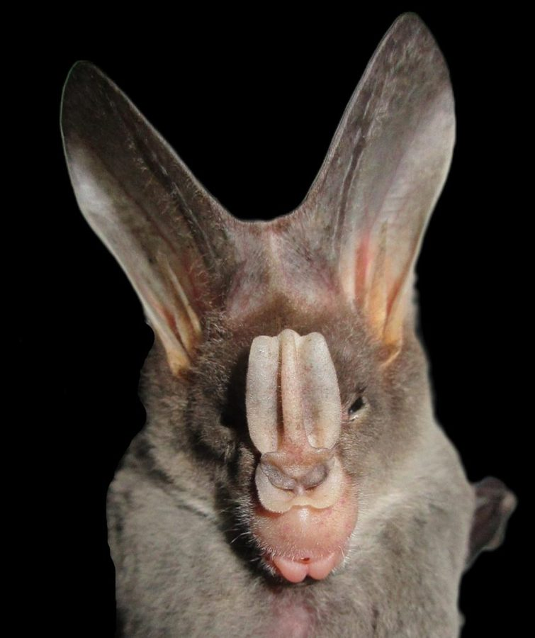

बड़ा चमगादड़Greater False Vampire Bat
Lyroderma lyra · Megadermatidae · MAM-0026

- Scientific name
- Lyroderma lyra (Thomas, 1902)
- Family
- Megadermatidae
- Hindi
- बड़ा चमगादड़
- Local names
- chamgadad, bada chamgadad, bat, lyroderma
- Status here
- native
- Movement
- Resident, here all year
- IUCN
- LC
- Review
- audited and independently read
When to look कब देखें
Present all year.
Uses and possibilities उपयोग और संभावनाएँ
“Traditional medicine” means a documented traditional use, not a claim that it works. Nothing on this page is medical advice.
Drawn from the documented uses in the profile below, where each is labelled traditional, current or a research lead. All uses →
Tell it apart from इनसे अलग पहचानें
बड़ा चमगादड़ / Greater False Vampire Bat
Lyroderma lyra (Thomas, 1902) — Megadermatidae
बड़ा चमगादड़ — गाँव के छप्परों, गुफाओं, और टूटी-फूटी ईंटों की दीवारों में दिन भर सोता है और रात को निकलकर बड़े कीड़े, छोटी छिपकलियों, छोटे चूहों और यहाँ तक कि दूसरी छोटी चमगादड़ों को शिकार करता है। नाम 'फ़ॉल्स वैम्पायर' (False Vampire) पूरी तरह झूठ है — इसका खून से कोई संबंध नहीं है! यह शुद्ध रक्षक है: एक घर की दीवार से अकेला यह चमगादड़ रात में सैकड़ों कीड़े खा लेता है। इसके कान बहुत बड़े, नाक पर अजीब-सा सींग (फोलिड), और चेहरा भयानक लगता है, पर बिल्कुल हानिरहित है। दिन में आलस के साथ सोता है, रात को शिकार। आवाज़ें निकालता है, पर इक्कीस हज़ार हर्ट्स पर — इंसान को सुनाई नहीं देती। गाँव के कीट-निरोध के लिए वरदान है।
Quick Identification त्वरित पहचान
| Feature | Description |
|---|---|
| Size | Wingspan 45–55 cm; head-body length 10–13 cm; weight 35–55 g |
| Ears | Very large and prominent, funnel-shaped, connected at the base by a low band |
| Nose-leaf | Prominent, lancet-shaped, extending from the nostril region; used for echolocation |
| Wings | Large, broad; relatively short and blunt-tipped for maneuverable flight |
| Fur | Pale grey to light brown dorsally; lighter (almost whitish) ventrally |
| Face | Distinctive and somewhat grotesque appearance; large-eared, leaf-nosed |
| Eyes | Relatively large for a bat; useful for hunting under moonlight |
| Behaviour | Roosts in clusters in caves, structures, and tree cavities; active at dusk and night |
| Diet | Specialized for large insects and small vertebrates; larger prey than typical insectivorous bats |
Field tip: A medium-sized bat with very large ears, a prominent nose-leaf, and a pale grey-brown coloration. Often seen hanging from the rafters of old buildings, caves, or in tree holes during the day. At night, listens and hunts from a perch, then dives to capture prey. Not a vampire; completely harmless and beneficial.
हिंदी — कैसे पहचानें: बड़े कान, नाक पर अजीब सींग (फोलिड), हल्के भूरे रंग की। दिन में सोता है, रात में शिकार। पूरी तरह बेज़हर।
Morphology आकारिकी
Biometrics (typical measurements):
| Measurement | Range |
|---|---|
| Head-body length | 10–13 cm |
| Tail length | 4–5 cm |
| Wingspan | 45–55 cm |
| Forearm length | 11–13 cm |
| Weight | 35–55 g |
Body: Moderately sized for an insectivorous bat. The body is robust but streamlined for flight. The fur is dense and relatively long.
Coloration: The dorsal surface is pale grey to light grey-brown; the ventral surface is almost white or cream. The ears and wings are slightly darker. There is little sexual dichromatism.
Ears: Exceptionally large and funnel-shaped, connected at the base by a low membranous band across the forehead. The ears are used for hearing the sounds produced by prey organisms.
Nose-leaf: A prominent, lancet-shaped projection above and around the nostrils, used in echolocation. The shape is distinctive among Indian bats.
Wings: Relatively broad and blunt-tipped, adapted for maneuverable flight in cluttered habitats (forest understory, structures).
Eyes: Relatively large compared to most insectivorous bats; the species uses vision in addition to echolocation for hunting, especially under moonlight.
Feet: Armed with sharp claws for perching and catching prey.
हिंदी: शरीर पुष्ट, हल्का भूरा। कान बहुत बड़े, फ़नल जैसे। नाक पर सींग (लैंसेट जैसा)। पंख चौड़े, कुंद। आँखें बड़ी।
Behaviour & Ecology व्यवहार और पारिस्थितिकी
Roost fidelity. Roosts solitarily or in small groups in caves, rock shelters, old buildings, and tree cavities. The same roost may be used for extended periods, sometimes for years.
Ambush hunter. Unlike many bats that catch insects on the wing, the false vampire bat hunts by listening and watching from a perch, then pouncing on prey when detected. This hunting style is more similar to raptors.
Echolocation and vision. Uses high-frequency ultrasonic calls (55–95 kHz) for echolocation but also relies on vision, especially under moonlight. The large eyes are unusual for insectivorous bats.
Diverse diet. Feeds on large insects (grasshoppers, cicadas, beetles, moths), small lizards, small frogs, and small rodents. Occasionally hunts other bat species. A single individual may consume 10–15 grams of prey per night.
Vocalizations. Produces ultrasonic echolocation calls, but also audible chattering and snarling sounds when disturbed.
Reproduction. Likely breeds once per year, with young born in the monsoon season (June–August). The exact reproductive cycle in wild populations is not well documented.
Life Cycle / Phenology जीवन चक्र
| Stage / season | Event |
|---|---|
| Year-round | Roosts in caves and structures; some activity reduction in cold months |
| May–June | Pre-breeding; males establish roosts and may become more vocally active |
| June–August | Breeding season; females give birth and nurse young |
| August–October | Young bats fledge and learn to hunt |
| October–May | Mixed activity; feeding and social interactions |
| Lifespan | Estimated 10–15 years in wild; longer in captivity |
Host Plants or Prey आहार
Primary prey items:
- Large insects: grasshoppers, cicadas, locusts
- Beetles, especially large species
- Moths
- Small lizards (wall lizard)
- Small frogs (Asian Common Toad tadpoles and small toads)
- Small rodents (Indian Gerbil, House Mouse)
- Small bats (opportunistically)
Hunting technique: Listens and watches from a perch, detects movement or sound, launches a rapid flight intercept or ground strike, seizes prey with wings and feet, returns to perch to consume.
Predators / Natural Enemies शत्रु
- Raptors: Black Kite, bengal eagle-owl, Spotted Owlet (especially for roosting bats or young)
- Snakes: Indian Rat Snake, Checkered Keelback (raid roosts for bats and nestlings)
- Mammalian predators: Domestic cats, jackals, monitor lizards
Agricultural / Human Relevance कृषि प्रासंगिकता
Pest control. The greater false vampire bat is an excellent controller of agricultural and household insect pests. A single bat may consume thousands of insects per year. Grasshoppers, crickets, and beetles that damage crops are primary prey.
House-dwelling populations. Bats that roost in old buildings and village structures consume vast numbers of insects in and around human settlements, reducing pest pressure on stored grain and household items.
Harmless. Contrary to the "vampire" name, this species feeds only on insects and small vertebrates. It does not suck blood and poses no threat to humans.
Traditional and Ethnobotanical Use: Some hunting occurs for traditional medicine uses in a few regions, but this is not common in eastern UP.
Today. Common in areas with suitable roosting habitat (caves, old structures, tree cavities) and adequate insect prey. Populations may decline where roosting sites are destroyed (building demolition, cave destruction) or where pesticides reduce insect prey availability.
Research direction (a lead, not a result). The diet and predatory behavior of false vampire bats are partially described; local research questions include: whether pest suppression is measurable by comparing insect abundance in villages with high and low bat populations, and whether the species uses different hunting strategies (listening versus visual hunting) under moonlit versus dark nights.
हिंदी: रात में हज़ारों कीड़े खाता है। घास-फूस, झींगुर, भृंग, कीड़े — सब कीटनाशक की ज़ैविक दवा। घर की दीवार में अकेला बैठा तो पूरी रात का कीटों से शुद्धि। बिल्कुल हानिरहित, खून नहीं खाता। गाँव के अनाज के लिए बहुत फ़ायदेमंद।
Expected Locally स्थानीय रूप से अपेक्षित
Not a field record. Written from published accounts for eastern Uttar Pradesh. No confirmed local sighting yet — if you have seen it, that is what the atlas needs.
अभी तक स्थानीय पुष्टि नहीं। यह विवरण प्रकाशित स्रोतों से है, किसी अवलोकन से नहीं।
Greater false vampire bats are expected in areas with caves, rocky outcrops, and old structures (abandoned buildings, forts, temples) throughout Basti district. They are best located by observing their daytime roosts — hanging from cave ceilings or old wooden rafters in clusters or singly. They are most active at dusk and during the night. A first local record should include location (cave name, building name, block, village), date, time of observation, number of individuals, and photographs. Please report any sighting to the atlas.
Distribution वितरण
Global range: South and Southeast Asia — India, Sri Lanka, Bangladesh, Thailand, Malaysia, and Indonesia.
In India: Widespread in tropical and subtropical forests, from the Himalayan foothills to the Deccan. Present in nearly every state.
In Uttar Pradesh: Present in forested areas, caves, and older human structures throughout the state.
In Basti district / eastern UP: Likely present in caves, old structures, and wooded areas; distribution poorly documented locally.
Research Questions शोध प्रश्न
Anyone can investigate these | कोई भी इन प्रश्नों की जाँच कर सकता है
- How many greater false vampire bats roost in a given cave or old building in Basti? — Count individuals during daytime surveys.
- What insect species are most commonly found in bat roosts or droppings? — Collect and identify prey remains.
- Do false vampire bat populations vary with season, and do some individuals migrate? — Long-term monitoring.
- How much insect pest biomass is consumed by bats in a given village in a month? — Estimate from bat weight and feeding rates.
- Are villages with bat-friendly roosts (old buildings, caves) less plagued by grasshopper and cricket damage than villages where bats are absent? — Compare pest damage.
Similar Species मिलती-जुलती प्रजातियाँ
| Species | How to tell apart | हिंदी | |
|---|---|---|---|
| Other false vampires (Megaderma spasma) — if present | Smaller, smaller ear base diameter, different geographic range | छोटा, अलग क्षेत्र में | |
| Large insectivorous bats (Myotis spp.) | Smaller (forearm 3.5–4.5 cm vs. 11–13 cm), simpler nose (no nose-leaf), different hunting behavior | बहुत छोटा, सरल नाक | |
| [[house_rat | Fruit bat]] roost companions | Larger (forearm 15–20 cm), eat fruit only, different face structure | बहुत बड़ा, फल खाता है |
Field rule: A medium-sized bat (wingspan 45–55 cm) with very large funnel-shaped ears, a prominent nose-leaf, and pale grey-brown fur, hanging from cave ceilings or old buildings during the day, is a greater false vampire bat. Despite the name, it is harmless and beneficial, feeding on insects and small prey. It is a natural pesticide.
Taxonomy & Classification वर्गीकरण
Original description. Described by Oldfield Thomas in 1902 in the Annals and Magazine of Natural History. The genus Lyroderma contains only this species (monotypic).
Subspecies. Lyroderma lyra lyra — the nominate subspecies found in India. Monotypic; no subspecies are recognized.
Family and order placement. Megadermatidae, the false vampire bats (also called yellow-winged bats); order Chiroptera.
Phylogenetic notes. Megadermatidae is a small family of Old World bats specialized for hunting large prey from a perch. Lyroderma represents the largest living false vampire bat.
IUCN status rationale. Listed as Least Concern due to its wide range, stable population, and ability to thrive in human-modified habitats. No major conservation threats; declines occur locally where roosting sites are destroyed.
Photo Gallery फोटो गैलरी
Photos needed आवश्यक फोटो
- [ ] Greater false vampire bat hanging from cave ceiling or rafter (छत से लटकता हुआ)
- [ ] Face showing large ears and nose-leaf (चेहरा और नाक की संरचना)
- [ ] Roost site with multiple individuals (समूह)
No photos yet — add field photos to media/species/false_vampire_bat/ and run node scripts/sync_photos.js.
Atlas Connections संबंधित प्रजातियाँ
- Indian Gerbil — prey species
- House Mouse — prey species
- Asian Common Toad — small toads as prey
- Nilphamari Narrow-mouthed Frog — small frogs as prey
References संदर्भ
- Thomas, O. (1902). New species or subspecies of mammals and birds. Annals and Magazine of Natural History, 10(7): 286–311.
- Prater, S.H. (1971). The Book of Indian Animals. Oxford University Press, Bombay.
- Bates, P.J. & Harrison, D.L. (1997). Bats of the Indian Subcontinent. Harrison Zoological Museum, Sevenoaks, UK.
- Chiroptera Specialist Group (2016). Lyroderma lyra — IUCN Red List. https://www.iucnredlist.org
- Pavey, C.R. & Smit, B. (2020). Greater false vampire bat: hunting behaviour and prey capture. Australasian Bat Society Newsletter, 58: 12–18.
- GBIF Occurrence Data — Lyroderma lyra, India (2026).
Source file: species/fauna/mammals/false_vampire_bat.md